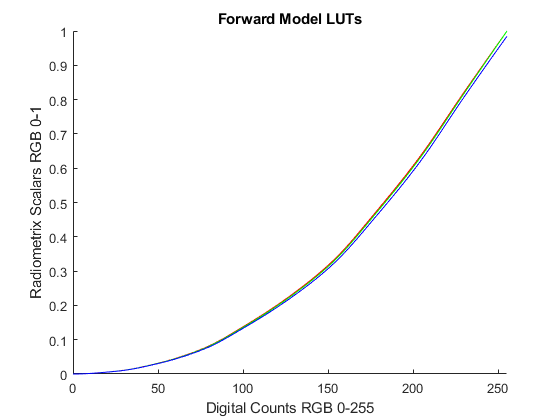
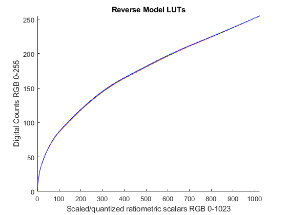
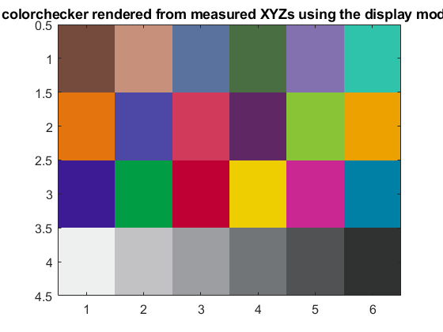
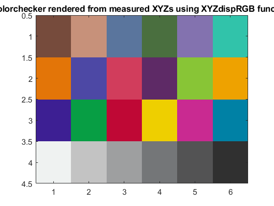

Credits
Team #: 1 | Authors: Cooper White & Gian-Mateo Tifone | Date: 11/28/2023
Contents
- Step 1/2 - initilization
- Step 3
- Step 4 - Forward Matrix
- Step 5 - Derive the LUTs
- Step 6 - Reverse Model
- Step 7 - Reverse LUT
- Step 8 - Final Display Model
- Step 9 - Render RGB image from XYZ
- Step 10 - Evaluate Color Accuracy of Display Model
- Step 11 - Create Display RGB Function
- Display XYZ2RGB function
- Flex write_ti1_file.m
- Step 12 - Feedback
Step 1/2 - initilization
clear; cie = loadCIEdata; XYZ_D50 = ref2XYZ(cie.PRD, cie.cmf2deg, cie.illD50); XYZ_D65 = ref2XYZ(cie.PRD, cie.cmf2deg, cie.illD65);
Step 3
load_ramps_data;
Step 4 - Forward Matrix
Red_max.X = max(ramp_R_XYZs(1, :)); %X_r,max Red_max.Y = max(ramp_R_XYZs(2, :)); %Y_r,max Red_max.Z = max(ramp_R_XYZs(3, :)); %Z_r,max Green_max.X = max(ramp_G_XYZs(1, :)); %X_g,max Green_max.Y = max(ramp_G_XYZs(2, :)); %Y_g,max Green_max.Z = max(ramp_G_XYZs(3, :)); %Z_g,max Blue_max.X = max(ramp_B_XYZs(1, :)); %X_g,max Blue_max.Y = max(ramp_B_XYZs(2, :)); %Y_g,max Blue_max.Z = max(ramp_B_XYZs(3, :)); %Z_g,max % Create matrix of max m_fwd = [Red_max.X, Green_max.X, Blue_max.X ; Red_max.Y, Green_max.Y, Blue_max.Y ; Red_max.Z, Green_max.Z, Blue_max.Z]; % Subtract the XYZ of display (XYZk) m_fwd = m_fwd-XYZk; % Add XYZk (black) collumn m_fwd = cat(2, m_fwd, XYZk); % Divide the XYZw value (Y) m_fwd = m_fwd / XYZw(2, 1); % Display Matrix m_fwd
m_fwd =
0.3736 0.3652 0.2095 0.0008
0.2248 0.6260 0.1452 0.0008
0.0518 0.1140 1.0149 0.0014
Step 5 - Derive the LUTs
% Step a/b RedRamp = ramp_R_XYZs - XYZk; % XYZ of Red minus black GreenRamp = ramp_G_XYZs - XYZk; % XYZ of Green minus black BlueRamp = ramp_B_XYZs - XYZk; % XYZ of BLue minus black % Step c RedRamp = RedRamp / XYZw(2, 1); % Divide XYZ by (Y) of white GreenRamp = GreenRamp / XYZw(2, 1); % Divide XYZ by (Y) of white BlueRamp = BlueRamp / XYZw(2, 1); % Divide XYZ by (Y) of white % Clip out of bounds numbers RedRamp(RedRamp<0) = 0; % Less than 0 becomes 0 RedRamp(RedRamp>1) = 1; % Greater than 1 becomes 1 GreenRamp(GreenRamp<0) = 0; GreenRamp(GreenRamp>1) = 1; BlueRamp(BlueRamp<0) = 0; BlueRamp(BlueRamp>1) = 1; % Step d % Estiamte Radiometric Scalars m_fwd_inv = pinv(m_fwd(1:3,1:3)); % Calculate inverse matrix of 3x3 forward matrix % The RS means they're converted into RGB, meaning R;G;B [3x11] for 11 % patches RedRampRS = m_fwd_inv * RedRamp; % Multiply XYZ by inverse forward matrix GreenRampRS = m_fwd_inv * GreenRamp; % BlueRampRS = m_fwd_inv * BlueRamp; % % Step e % Extract the Red/Green/Blue channels from the RSs of each ramp % I.e. Extract Red RS from RedRamp % Extract Green RS from GreenRamp % Extract Blue RS from BlueRamp RedRampRS_R = RedRampRS(1,:); % Red channel of red %RedRampRS_G = RedRampRS(2,:); %RedRampRS_B = RedRampRS(3,:); %GreenRampRS_R = GreenRampRS(1,:); GreenRampRS_G = GreenRampRS(2,:); % Green channel of green %GreenRampRS_B = GreenRampRS(3,:); %BlueRampRS_R = BlueRampRS(1,:); %BlueRampRS_G = BlueRampRS(2,:); BlueRampRS_B = BlueRampRS(3,:); % Blue channel of blue % Step f % Interpolate channels from 0-255 using 'pchip' ramp_DCs = round(linspace(0,255,11)); % Create LUT for Red/Green/Blue RedLUT_fwd = interp1(ramp_DCs, RedRampRS_R, 0:1:255, 'pchip'); % Red LUT forward GreenLUT_fwd = interp1(ramp_DCs, GreenRampRS_G, 0:1:255, 'pchip'); % Green LUT forward BlueLUT_fwd = interp1(ramp_DCs, BlueRampRS_B, 0:1:255, 'pchip'); % Blue LUT forward % Plot LUT figure hold on plot(0:255, RedLUT_fwd, 'Color', [1, 0, 0]) plot(0:255, GreenLUT_fwd,'Color', [0, 1, 0]) plot(0:255, BlueLUT_fwd, 'Color', [0, 0, 1]) xlabel("Digital Counts RGB 0-255") ylabel("Radiometrix Scalars RGB 0-1") title("Forward Model LUTs") ylim([0 1]) xlim([0 255])
Step 6 - Reverse Model
m_rev = m_fwd_inv
m_rev =
4.1476 -2.3243 -0.5238
-1.4787 2.4687 -0.0479
-0.0455 -0.1586 1.0174
Step 7 - Reverse LUT
RedLUT_rev = uint8(round(interp1(RedLUT_fwd, 0:255, linspace(0, max(RedLUT_fwd), 1024), 'pchip', 0))); % Red LUT reverse GreenLUT_rev = uint8(round(interp1(GreenLUT_fwd, 0:255, linspace(0, max(GreenLUT_fwd), 1024), 'pchip', 0))); % Green LUT reverse BlueLUT_rev = uint8(round(interp1(BlueLUT_fwd, 0:255, linspace(0, max(BlueLUT_fwd), 1024), 'pchip', 0))); % Blue LUT reverse % Plot figure hold on plot(0:1023, RedLUT_rev, 'Color', [1, 0, 0]) plot(0:1023, GreenLUT_rev,'Color', [0, 1, 0]) plot(0:1023, BlueLUT_rev, 'Color', [0, 0, 1]) ylabel("Digital Counts RGB 0-255") xlabel("Scaled/quantized ratiometric scalars RGB 0-1023") title("Reverse Model LUTs") ylim([0 255]) xlim([0 1023])
Step 8 - Final Display Model
XYZw_display = XYZw; % White of dispaly XYZk_display = XYZk; % Black of display M_Display = m_rev; % Reverse matrix of dispaly RLUT_display = RedLUT_rev; % Red LUT reverse model GLUT_display = GreenLUT_rev; % Green LUT reverse model BLUT_display = BlueLUT_rev; % Blue LUT reverse model % Saves the B&W, and Reverse matrix of the display. Saves the R,G,B LUTs of % the reverse model save ('display_model.mat', 'XYZw_display', 'XYZk_display', 'M_Display', ... 'RLUT_display', 'GLUT_display', 'BLUT_display');
Step 9 - Render RGB image from XYZ
% Step a XYZ_D50; % Step b - Load in Munki XYZ + Lab load("loadMunkiData.mat") % Step c - Adapt XYZ under D50 -> XYZ under Display's whitepoint catXYZ = catBradford(Munki.XYZ, XYZ_D50, XYZw_display); % Step d - Subtract the black level catXYZ = catXYZ - XYZk_display; % Step e - Multiply XYZ by the Display to produce RS % [3x3] [3x24] munki_CC_RS = M_Display * catXYZ; % Step f munki_CC_RS = munki_CC_RS/100; % Step g munki_CC_RS(munki_CC_RS<0) = 0; munki_CC_RS(1<munki_CC_RS) = 1; % Step h munki_CC_RS = round(munki_CC_RS*1023 + 1); % Step i munki_CC_DC(1,:) = RedLUT_rev(munki_CC_RS(1,:)); munki_CC_DC(2,:) = GreenLUT_rev(munki_CC_RS(2,:)); munki_CC_DC(3,:) = BlueLUT_rev(munki_CC_RS(3,:)); % Step j - Visualize Chart Patches pix = uint8(reshape(munki_CC_DC', [6 4 3])); pix = fliplr(imrotate(pix, -90)); figure image(pix); set(gca, 'FontSize', 12); title("colorchecker rendered from measured XYZs using the display model")
Step 10 - Evaluate Color Accuracy of Display Model
% Step a - Double cast and rescale to [0-100] range munki_CC_DC = uint8( double(munki_CC_DC) * (100/255) );%Normalize to 1, then x100. % Step b - Matrix table4ti1 table4ti1 = ones(30, 4); table4ti1(:, 1) = 1:30; table4ti1(1:24, 2:4) = munki_CC_DC'; table4ti1(25:27, 2:4) = 0; table4ti1(28:30, 2:4) = 100; % Step c - Write .ti1 file write_ti1_file(table4ti1, 'disp_model_test.ti1'); % Step d - Use da Munki % disp_model_test.ti3 made % Step e - Load in XYZ values disp_XYZs = importdata('disp_model_test.ti3',' ',20); % Step f - Extra XYZs and average CC_XYZ = disp_XYZs.data(1:24, 5:7); % Extract XYZ Color display_black = disp_XYZs.data(25:27, 5:7); % Extract XYZ display black display_white = disp_XYZs.data(28:30, 5:7); % EXtract XYZ display white XYZw = mean(display_white); % XYZ white is average of three measurements XYZk = mean(display_black); % XYZ black is average of three measurements CC_XYZ = CC_XYZ'; XYZw = XYZw'; % Step g - Calculate Lab from CC patches Display_Lab = XYZ2Lab(CC_XYZ, XYZw); % Step h - Calculate dEab dEab = deltaEab(Display_Lab, Munki.Lab); % Step i print_display_model_error(Munki.Lab, Display_Lab, dEab);
Display model color error
XYZ_real->display_model->RGB_disp->display
Real vs. displayed ColorChecker Lab values
real displayed
patch # L a b L a b dEab
1 37.1865 14.9985 15.2592 36.8865 14.2261 15.5284 0.8713
2 65.8188 16.8695 18.0267 65.6802 14.8212 18.1930 2.0596
3 49.9949 -3.1841 -23.5159 51.0788 -0.7536 -21.3123 3.4552
4 42.6411 -15.3251 20.0423 42.7415 -17.8604 21.8983 3.1437
5 54.6852 9.6978 -26.7126 55.2683 12.8836 -26.1391 3.2891
6 71.2441 -33.1391 -0.5010 71.3126 -32.6945 1.0255 1.5914
7 62.2558 34.1094 57.7774 61.6009 30.0253 57.6497 4.1383
8 39.5890 9.9980 -43.6388 40.5232 17.0778 -42.7419 7.1972
9 51.8424 48.1403 16.0636 51.4238 46.1820 14.6605 2.4451
10 29.4495 22.4255 -21.7661 30.0405 23.9639 -21.6209 1.6543
11 71.6264 -24.3441 57.6850 71.4577 -30.1075 58.1888 5.7878
12 72.2288 20.6039 69.0149 71.7194 15.9079 67.0791 5.1048
13 28.6402 18.5907 -51.4092 29.8424 25.7203 -48.6971 7.7221
14 54.6309 -39.5493 32.8341 55.0122 -41.1915 34.6212 2.4567
15 42.5988 54.6049 25.7315 42.8231 50.4198 25.3424 4.2092
16 82.4265 3.8689 78.8570 82.3103 -2.5619 76.1660 6.9721
17 51.5476 49.5154 -14.3758 51.2270 50.0912 -14.4897 0.6688
18 49.3892 -26.5473 -28.6645 51.9430 -13.5950 -24.4903 13.8459
19 95.4458 -0.4414 0.0244 96.0094 -0.9179 0.3093 0.7911
20 80.0339 0.1309 -0.9345 80.3975 -0.0666 0.2644 1.2683
21 66.0107 -0.0004 -1.1463 66.4131 0.1474 -0.4507 0.8171
22 50.5546 -0.6207 -0.9616 51.0370 -0.4016 -0.8122 0.5504
23 35.1532 -0.0632 -0.9708 35.8202 0.2682 -0.7166 0.7870
24 20.3224 -0.2858 -0.5603 19.9919 0.0087 0.2874 0.9564
min 0.5504
max 13.8459
mean 3.4076
Step 11 - Create Display RGB Function
Display_RGB = XYZ2dispRGB("display_model.mat", CC_XYZ, XYZw) ; % Reusing Ye' Holy Jim Code pix = reshape(Display_RGB', [6 4 3]); pix = fliplr(imrotate(pix, -90)); figure; image(pix); set(gca, 'FontSize', 12); title("colorchecker rendered from measured XYZs using XYZdispRGB function");
Display XYZ2RGB function
function munki_CC_DC = XYZ2dispRGB(display_model, XYZ, XYZn) % display_model = display_model.mat file % XYZ [3xn] = XYZ valeus of CC patches % XYZn [3x1] = Whitepoint / Reference white load("display_model"); % Step c - Adapt XYZ under D50 -> XYZ under Display's whitepoint catXYZ = catBradford(XYZ, XYZn, XYZw_display); % Step d - Subtract the black level catXYZ = catXYZ - XYZk_display; % Step e - Multiply XYZ by the Display to produce RS % [3x3] [3x24] munki_CC_RS = M_Display * catXYZ; % Step f munki_CC_RS = munki_CC_RS/100; % Step g munki_CC_RS(munki_CC_RS<0) = 0; munki_CC_RS(1<munki_CC_RS) = 1; % Step h munki_CC_RS = round(munki_CC_RS*1023 + 1); % Step i munki_CC_DC(1,:) = RLUT_display(munki_CC_RS(1,:)); munki_CC_DC(2,:) = GLUT_display(munki_CC_RS(2,:)); munki_CC_DC(3,:) = BLUT_display(munki_CC_RS(3,:)); % Convert to uint8 uint8(munki_CC_DC); end
Flex write_ti1_file.m
function filename = write_ti1_file (table4ti1, filename) % Open/Create document fid = fopen(filename, 'w+'); % Create Document fprintf(fid, '%s\n\n', "CTI1"); fprintf(fid, '%s\n\n', 'COLOR_REP "RGB"'); fprintf(fid, '%s\n', "NUMBER_OF_FIELDS 4"); fprintf(fid, '%s\n', "BEGIN_DATA_FORMAT"); fprintf(fid, '%s\n', "SAMPLE_ID RGB_R RGB_G RGB_B"); fprintf(fid, '%s\n\n', "END_DATA_FORMAT"); fprintf(fid, '%s\n', "NUMBER_OF_SETS 30"); fprintf(fid, '%s\n', "BEGIN_DATA"); for i = 1:size(table4ti1(:, 1)) fprintf(fid, '%i %i %i %i\n' ,table4ti1(i, 1),table4ti1(i, 2),table4ti1(i, 3),table4ti1(i, 4)); end fprintf(fid, '%s', "END_DATA"); fclose(fid); end % End function
Step 12 - Feedback
i) Gian-Mateo failed to realize that uint8 did not in-fact mean "round", but all was resolved in the end. ii) Cooper and Gian-Mateo did the functions, code, and revision/cleanup. iii) Using the ones function to build a matrix iv) Explanation of what Step 9.j is doing.